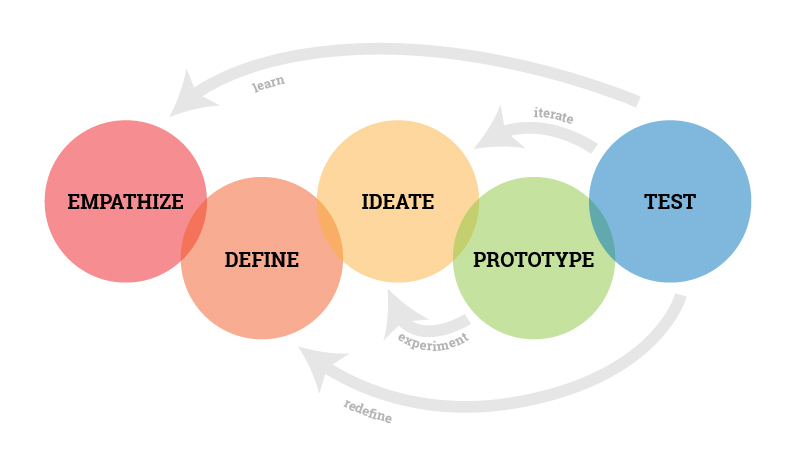

Design Thinking
Introduction
The adoption of the 5-stage Design Thinking framework to uncover a solution was a strategic choice as its values and strength alignment with our objectives. This framework, comprising of the Empathise, Define, Ideate, Prototype, and Test stages (Dam, 2023), is acknowledged for its versatility, problem-solving efficacy, and human-centred approach (Krohn & Meinel, 2022), which resonate with the unique challenges we aimed to address.
Why Design Thinking
The strength of Design Thinking lies in its capacity to explore an array of tools and thinking protocols centred on meeting human needs and desires (Koh et al., 2015). This alignment with our objective to improve student motivation and practice positions Design Thinking as a fitting approach. Design thinking is inherently user-centred, putting the user at the core of the design process, ensuring that products and services are designed to meet their needs (Razzouk & Shute, 2012)
This shift in perspective transforms the traditional model of learning into a dynamic, two-way exchange of ideas and solutions. The flexibility of Design Thinking enables us to tailor our approach to the specific needs and desires of students, ensuring a comprehensive solution that resonates with them. It's a model that places the diverse needs of our students at the forefront, shaping a solution that fosters their love for music and empowers them as active participants.
Henderson (2023) underscores that Design Thinking is an optimal selection when there is ample time, a creative team, and the freedom to experiment. Given our autonomy as the sole stakeholders, our capacity for experimentation, and a flexible timeframe, the conditions are ideal. Furthermore, with a student body exceeding 100, we are well-positioned to attract creative minds for this design solution. Therefore, Design Thinking emerges as a fitting choice for our endeavour.
Examples in Literature
Design Thinking has been used in education, targeting the creative minds of students to develop new educational products or resources, design solutions to real-world problems, improve the design of the school or classroom, and plan and implement school-wide projects. Some case studies outlined by Meinel and Krohn (2022) and Koh et al. (2015) include:
- Design of a new school building
- Development of a new educational app
- Redesign of a schoolyard
- Planning and implementation of a school-wide project
- Development of a new science curriculum
- Design of a new playground
- Creation of a student-led social enterprise
- Redesign of a school library
While all these case studies offered valuable insights into the Design Thinking process, we opted to delve deeper into those that did not culminate in a tangible structure or object.
| Development of a new educational app | Planning and implementation of a school-wide project | Development of new science curriculum | Creation of a student-led social enterprise | |
|---|---|---|---|---|
| Empathise | Interviewed students and teachers to understand needs and wants. Observed students and teachers using existing apps to identify areas for improvement | Interviewed students, teachers and parents for interests and ideas. Observed students and teachers in classrooms to get a sence of school culture and values | Teachers surveyed students to learn about their interests and what they wanted to learn | Students interviewed the local community to learn about needs and challenges. Existing social enterprises were researched |
| Define | Problem was defined using data and goals were set | Problem was defined using data and goals were set | Information gathered was used to define the problem | Information gathered was used to define the problem |
| Ideate | Generated variety of creative ideas for new educational app | Generated a variety of creative ideas | A variety of ideas for the new curriculum was generated | A variety of ideas was generated |
| Prototype | Created wireframes and prototypes of the app, which were used to get feedback from students, teachers, and other instructional designers. Design was refined using feedback | Created a plan for the project that included a timeline, budget, and resources needed. Prototype of one key element of the project was developed. | Teachers created prototypes, including lesson plans, activities, and assessments | A prototype was created, including a business plan, product/service, and marketing strategy |
| Test | Conducted a pilot test of the new app with a small group of students and teachers. The test was positive and so the app was approved for full development | Implemented the prototype in a small group of classrooms. The feedback from students and teachers were positive and the project was therefore approved for full implementation | The final design was presented to the school principal, who was impressed and approved it for implementation | The social enterprise was tested with the local community and feedback was gathered to improve their product or service |
Upon juxtaposing these case studies, commonalities surfaced which significantly shape specific action points that guided our approach to the Design Thinking process.
| Similarities | Action points | |
|---|---|---|
| Empathise | All four case studies began with the designers empathising with the needs and wants of the people they were designing for. |
|
| Define | In all four case studies, the designers defined the problem or challenge that they were trying to solve based on the information they gathered in the empathize stage. |
|
| Ideate | The designers in all four case studies generated a wide range of creative ideas for solving the problem or challenge that they had defined. |
|
| Prototype | The designers in all four case studies created prototypes of their ideas in order to test them with users and get feedback in order to iterate |
|
| Test | The designers in all four case studies tested their prototypes with users and made changes based on the feedback they received. |
|
Our objective is to employ these action points derived from academic literature in the application to forming a solution for our wicked problem.
Application
After conducting a literature review and a comparative analysis of Design Thinking applications in various educational settings, the next step is to adapt these insights to our context. Leveraging the identified action points, including those tailored to my unique circumstances, the "Process" section of this website both outlines and substantiates our adoption of the Design Thinking framework to come up with wicked solution
Due to the unique nature of my context, my application of the Design Thinking framework differs slightly to the examples found. However, it retains the fundamental five core stages while incorporating additional elements, organised into three distinct sections of the design process.
| Preparation | Design Journey | Post-Design |
|---|---|---|
| This section covers the initial steps, including empathising with stakeholders, defining the problem and solution, and recruiting participants for the design process. | This section details the core design process, where stakeholders actively participate in ideation, prototyping, and testing phases to shape the solution. | In this final section, the focus shifts to the analysis of findings, iteration, refinement, and the official launch of the solution. |
Below is a visual representation of the proposed timeline for applying the Design Thinking framework across these three sections, encompassing the five core stages and additional stages.
| Preparation | Empathise | Completed |
|---|---|---|
| Define | Completed | |
| Design Journey |
Ideate | Term 1 Weeks 1-5 |
| Prototype | Term 1 Weeks 6-8 | |
| Test | Term 2 Weeks 1-8 | |
| Post-Design | Refine | Winter Holidays |
| Launch | Term 3 |